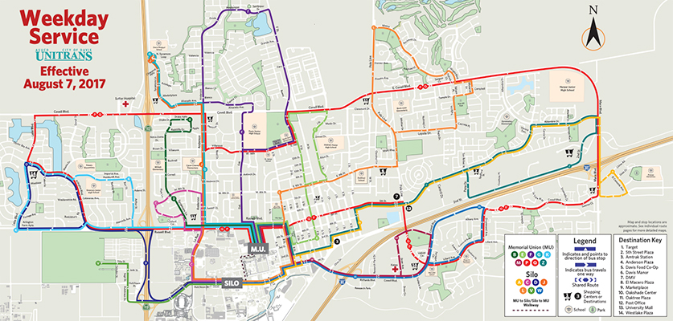
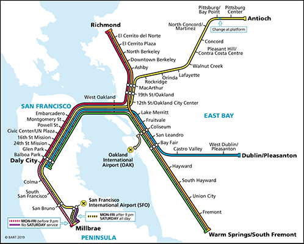

I. Introduction
Davis, California, a city that is home to over 68,986 people and the location of the University of California, Davis (US Census Bureau). Although the city is famous for its large biking community, many students take alternative forms of transportation to school, one of which is the Unitrans bus. The typical first-time bus experience is terrifying as most people get lost or confused how to read the Unitrans bus map. It starts with you opening the Unitrans webpage on your mobile device trying to figure out how to get from point A to point B, but quickly getting frustrated as you are only shown the 26 bus lines and what times they will appear, and the different location names. After countless searching how to get to your designated place, you might rely on asking a stranger or driver in hopes to find the right bus. This is a stressful and time-consuming experience that Unitrans passengers go through when they board a different bus for the first time. Although the process is stressful, users continue to use the service because of its overall efficiency, affordability, branding, and community engagement.
II. Background (History, Narratives, Mission, Design Concept)
Looking back at the history of Unitrans, the service goes back to 1968 where it was first founded. Since then, for over 50 years, the Unitrans service has been transporting students with an average of 20,000 people per day and coverage of over 3/4 of the city of Davis. (Unitrans). Although many use this service, whether that be to commute to school or to get around the city, in a study done by UC Davis in the 2016-17 school year,
"on average weekday...37 percent bike, 30 percent drive alone, 19 percent ride the bus, 8 percent walk or skate, 5 percent carpool, [and] 1 percent rides Amtrak" (UC Davis).
These statistics should bring concern that there are more people driving solo cars in Davis, instead of carpooling or taking public transportation. With increases in global carbon dioxide emissions in recent years, there needs to be a change in the way students travel. As a society, we should become more aware of the environment and the impact we have on it. To understand the reason why more students are driving than taking public transportation, I asked 10 daily car drivers if they would try taking the bus again if navigating were designed differently in a more user-friendly way, 80% agreed that they would try it out. Additionally, I randomly selected 20 students to interview about the current bus system and 16 of the 20 students agreed that the bus was hard to use and wished there was a better way to understand the transit system here in Davis. With more than 75% of interviewed students agreeing that the Unitrans bus operation is hard to understand, it is clear that the way information is being delivered to passengers needs to be changed.
III. Analysis of the Experience
To get a better understanding of the bus experience, I decided to analyze the current experience on the Unitrans bus. To do so, I decided to try and figure out what it was like to go on a new route again for the first time by going from the Memorial Union on the UC Davis campus to the Safeway on Covell Blvd. To really immerse myself in this experience, I made sure to only use the Unitrans routes resources provided on their routes site as it was designed for. It was a challenge to navigate through, but almost 10 minutes of searching, I found the, All Routes Map from 2017 that shows the Unitrans route for each line.
Once figuring out which line I had to take, I went to the bus stop and boarded the
bus only to realize that I had no idea which stop I was supposed to get off at. I
was nervous for the duration of the entire ride, wondering if I had missed my
stop. By the time I had figured out when to get off the bus, I was 1 stop away. If it
had taken any longer for me to figure it out, I may have not made it to Safeway.
Although the ride was successful, the process of finding my way and navigating
through the Unitrans system was a terrible experience. Despite almost not
making it to Safeway, I realized that there were 4 main points that brought
together the Unitrans experience: efficiency, affordability, branding, and
community.
Although it was difficult to navigate and figure out how to use the bus, it is
efficient. By traveling on bike to and from campus it takes a lot of time and
energy depending on where you live. However, by taking the bus, students are
able to quickly travel back and forth around the city of Davis. This is especially
helpful for students who do not have bikes. Additionally, during cold and rainy
days, the bus helps students take cover and protect themselves from the
weather. Another reason why students use the bus is to go grocery shopping as
it is extremely difficult to bike while holding your groceries and hard to rely on
finding an alternative ride to the grocery store from a friend. By having multiple
bus lines and routes, Unitrans is able to care for its users as they continue to use
their services on a daily basis to fulfill every day needs.
Additionally, the bus is affordable. Davis being a college town, most
students do not have much money to spend because of the cost of tuition and
board. With Unitrans being completely free for students, it is a great way of travel
as it costs nothing for them to use and allows them to get around the city. By
doing so, students are more inclined to use the service. For example, in a survey
I conducted with the same 20 students previously mentioned, I asked whether
they would continue riding the bus if every ride cost $1.50 and 90% of the
students said they would stop using the bus and find alternative ways to get to
campus. Like many of the other students I interviewed, Dulcinea Herse Woo, a
second-year student said,
"I’d probably only use it when it was super rainy or my bike was broken or if I was carrying stuff and didn’t want to bike with it or walk with it".
This shows that by having students pay for the bus, it would decrease the
average user engagement and increase alternative fossil fuel transportation
methods such as cars.
Another key component to Unitrans is its branding of its iconic red buses.
Following the purchase of 2 red Routemaster double-decker buses from London
in 1968, the red-double decker buses are an iconic branding to the Unitrans
name. After purchasing more buses in the 1970’s, Unitrans continues to drive
passengers in these historic, red double-decker buses today. This is a unique
experience only few riders get to experience as many of the original buses have
since been retired and are out of service. Unitrans has since taken this to their
advantage, using the rarity of the original buses as a gimmick to promote and
attract riders to use their services. By branding themselves, it has become a
recognizable and popular look here in the city of Davis, California.
Lastly, Unitrans is part of the local community here at Davis and is not
leaving anytime soon. By being the only form of public transportation on the UC
Davis campus, the school relies on Unitrans to transport students to and from
school. Additionally, with its strong connection with the UC Davis campus,
Unitrans has many celebrations and community events on campus that allow
them to actively promote themselves to the Davis community to get students to
use its services. For example, in 2017 was the 50th anniversary of Unitrans in UC
Davis where they had a huge celebration in the Memorial Union. By celebrating
the existence of these buses, we are promoting the bus and continuing it to be an
avid part of our everyday community on campus.
IV. Ethical Considerations
However, some ethical considerations should be taken into considerations when looking at the Unitrans bus service. For example, there is no knowing whether the carbon emissions produced by buses outweigh the environmental factor of carpooling? In an article by Julia Ann Easley, she writes,
Of the fleet's 49 buses, 44 run on compressed natural gas, and the others use biodiesel”
(Easley). This shows that even today, almost 90% of the Unitrans buses use
natural gases opposed to biodiesels and other alternative gases that are better
for the environment. Due to the quantity of buses and size of each bus, there is a
lot of gasoline needed to supply each vehicle for transportation. This would
unfortunately result in a higher release of carbon into the atmosphere.
Additionally, although the bus is meant to be accessible to students of all
abilities, most people with disability do not ride the bus because of its challenges
to get on/off. Even though there are ramps for those with walking disabilities to
enter the bus, it can be intimidating and an unwelcoming experience for them.
They are not the only ones, as those with visual impairment are also at a
disadvantage because there is no verbal communication when the bus is at a
stop. This creates a very unpleasant experience for those with disabilities and is
most likely the reason why many of those students do not take the bus.
Lastly, Unitrans should be aware of the quality of the bus driver. With all
Unitrans bus drivers being students, there is a lot of reliability and trust in the
student driving 30+ passengers on a bus. Each passenger’s life is in the driver’s
hands. It is extremely important that the driver follows traffic rules more than a
normal driver on the street as there is a lot of responsibility on them to ensure
everyone is safely transported from location to location. If drivers do not follow
traffic laws or get into an accident it can cause serious damage to the
passengers on the bus and provide a bad reputation to the Unitrans name.
For these reasons, it is important that Unitrans take precaution in what
they are doing, as they should be aware of these ethical considerations to ensure
that they are helping the environment, accommodating the disabled, and
ensuring the safety of its passengers.
V. Redesigning the Experience
To improve the Unitrans experience, I would like to propose a redesign to
the Unitrans bus system in Davis, California by introducing a mobile application,
a monthly lottery, adding maps inside the bus, and switching to zero emission
vehicles. By creating a Unitrans app, it would eliminate the current stressful
experience as it would allow users to make and create accounts, add frequent
bus routes, and see when the next available bus will come to for their desired
location when they open the app. If you are going somewhere new for the first
time, the app would find your location, and have you insert your destination
location. Once submitting the input queries, it would show you the correct bus
line to take and directions to the nearest bus stop for you.
Once successfully boarding the bus, riders can check-in on the mobile app
by scanning QR codes posted around the bus to enter a monthly lottery. This
concept is similar to the Volkswagen’s Fun Theory Speed Camera Lottery, where
drivers who obeyed the speed limit got entered into a lottery of the money
accumulated by those fined for speeding (Richardson). In this new version,
Unitrans would create a lottery for passengers who ride the bus and use a partial
sum of the money collected from those who were ticketed for disobeying traffic
laws to a lucky bus passenger. By introducing this monthly lottery, it would
encourage ridership and increase the use of public transportation in hopes to
decrease the amount of people using cars. Not only would checking-in on the
app enter you in the lottery, but the map on the app’s interface would appear
similar to Google Maps, where your desired route would appear bolded, clearly
showing you the directions to your destination. An example can be seen below:
However, additional markers representing each of the bus stops on your current
bus route would be shown so you know when to get off. This is similar to the SF
Bart maps, where all stops and transfer stations are clearly represented.

(Bart).
By having similar maps to this, users will be able to easily navigate through Davis
without having to constantly worry about getting lost. Additionally, in every bus,
instead of having blank walls on the buses, Unitrans should add large printed
maps or have handout copies of maps accessible on each bus showing the route
the Unitrans buses follow. By implementing these ideas, people will finally
understand how to use the bus in a quick and stress-free process.
Finally, by switching to electric vehicle buses, it would be a great help to
the environment as it would eliminate carbon emissions being polluted. This
would especially be a good switch if bus ridership increased because if carbon
emissions from the current buses outweigh the environmental factor of
carpooling, buses will continue to pollute the environment. Therefore, by
switching to electric vehicles, zero emissions would be released, promoting a
more environmentally friendly way to travel. Through these changes we will
revolutionarily change the way Unitrans operates, creating not only a new useful
way of navigating through the city of Davis, but a chance for fun and to improve
the environment.
VI. Conclusion
In conclusion, by introducing these new additions into the Unitrans system, we will forever change the way the community of Davis uses the bus by creating a fun new experience. Through this switch we will change the efficiency of the bus system as it will no longer need to use gasoline to run and would cost less to maintain and support. By switching to zero emission systems, it would be a great rebranding for Unitrans as it would show that the bus system cares for the environment and community around emitting zero carbon emissions into pollute the atmosphere. Additionally, if bus ridership increases through these changes, other campuses or cities may notice this new bus experience and adapt a similar system to their communities. By implementing these systems, Unitrans can be the pioneer of something big and not just be a bus. Together, we can change every day travel and the world.